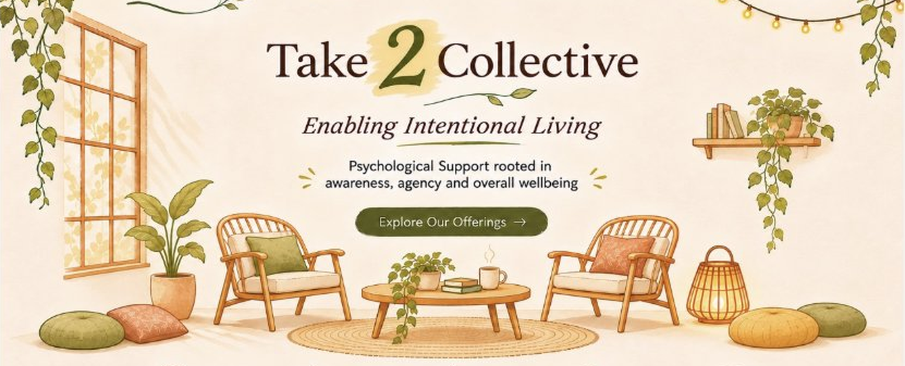
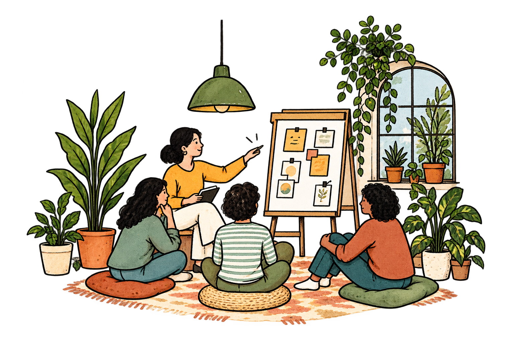
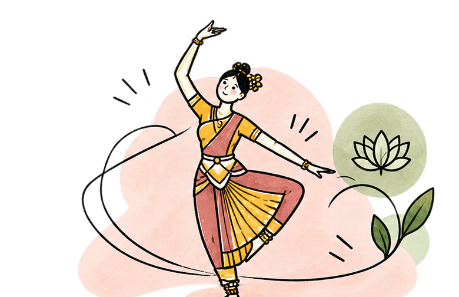
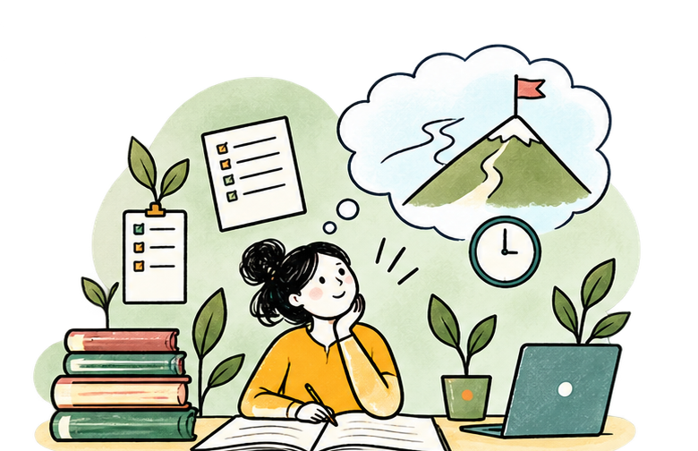

Take2Collective
Enabling Intentional Living
Psychological support rooted in awareness, agency and overall wellbeing.

Explore Our OfferingsFiguring life out isn't a one-time process.
It's the space between living automatically and living intentionally: a space to reflect, learn, connect, experiment and choose how we want to live.
"We pause to reconsider what we want, what we need, and who we are becoming."
Spaces, experiences and resources for navigating the many dimensions of adult life.
Five ways to pause, connect and grow.


Individual Counselling
Personal spaces for reflection, psychological support and self-understanding.

Groups & Workshops
Shared spaces to learn, reflect, connect and explore alongside others.

Movement & Wellbeing
Connecting classical dance, rhythm and affective somatics for everyday regulation.

Community Projects
Beyond the Boards, exam transitions and community dialogues grounded in lived reality.


Resources & Reflections
Verified crisis helplines, the Emotion Wheel, and thoughtful essays to pause and return to.

Hi, I'm Prachiti.
I'm a Counselling Psychologist with a Master's in Lifespan Counselling from St. Xavier's College, Mumbai.
My work sits at the intersection of psychology, everyday life and the questions that come with growing up, around identity, relationships, ambition, uncertainty, transitions and the choices we make along the way.
Take2 grew from a question I keep returning to:
"How can we navigate adult life with greater awareness, agency and wellbeing?"
My own experiences across psychology, UPSC preparation and personal finance have shaped the questions I bring to this work. Different worlds, but all of them have taught me something about how people make choices, deal with uncertainty, define success and figure out what comes next. Take2 is where these threads come together: with psychology at its heart.
I'm interested in making psychological ideas and support more accessible, understandable and relevant to everyday life through therapy, workshops, conversations, projects and collaborations.